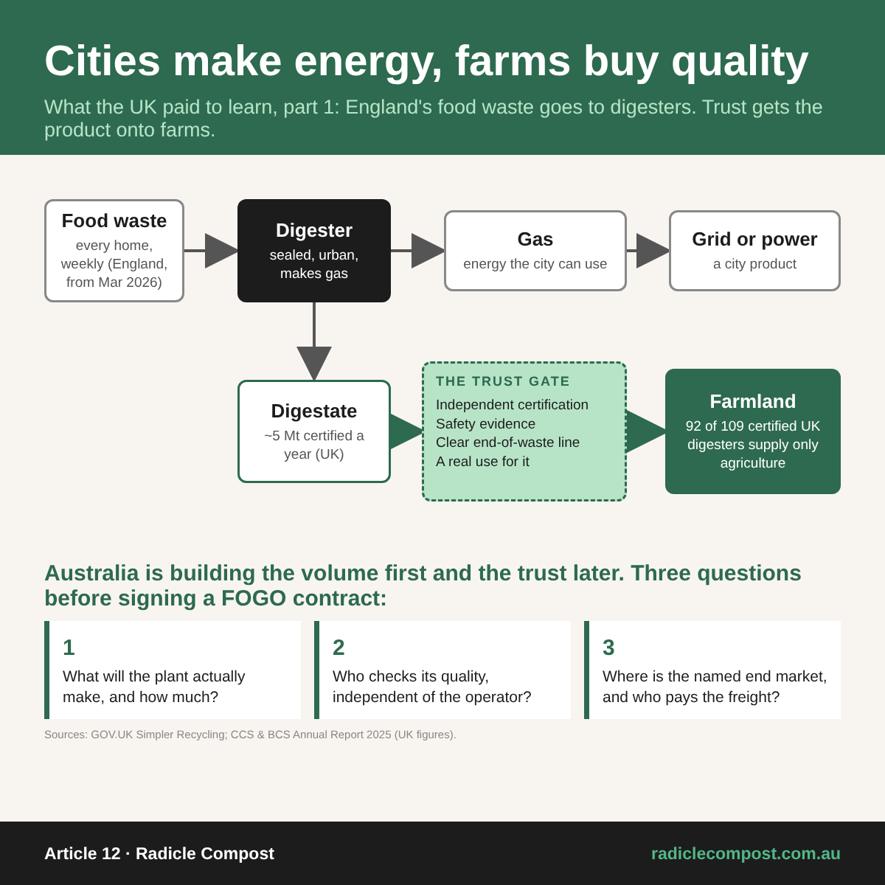

England built its food waste system around digesters. What made it work on farms was something else.
Since 31 March 2026, every council in England has had to collect food waste from every household, every week. Around three-quarters were ready on the day, and some have agreed later start dates.
I spent part of November in the UK talking to people across the industry about where all that food waste ends up. The short answer is a digester. The longer answer matters more for Australia.
Food waste is wet, rich in energy and arrives every day. Those are exactly the conditions an anaerobic digester wants. A digester sits in a sealed building, makes gas for the grid or for power, and can operate close to the people producing the waste.
England's government has called digestion the best environmental outcome for food waste. Before the new rules, most councils with a separate food collection were already sending it to digesters. Those that mixed food with garden waste mostly sent it to in-vessel composting.
What struck me was how settled this has become. Digestion is now the default for urban food waste, and digesters are broadly accepted as part of the city, issues and all. Composting has moved to where its market is, closer to the farms. Because digestion is the default, the hard question of composting food waste in urban areas has largely been sidestepped.
Australia has mostly gone the other way, towards composting. I don't think one country is right and the other wrong. The difference comes down to market conditions and policy: the subsidies, landfill levies, carbon rules and financial instruments the UK and the rest of Europe have used, compared with ours. Different choices have produced a different industry.
For a big city that suits. Energy is the product a city can use.
Gas is only part of the output. The rest is digestate, and there's a lot of it. The UK now makes about 5 million tonnes of certified digestate a year, alongside about 2 million tonnes of certified compost.
The city can't use any of that. A farm can. Of 109 certified digesters in the UK, 92 supply agriculture and nothing else.
Getting there wasn't automatic, and it isn't lucrative. When the industry was surveyed in 2020, digestate was generally found to be a low-value product. What made it saleable at all was quality that a farmer, and the food chain buying the farmer's crop, could trust.

England spent the best part of two decades building that trust:
Farmers are being pushed in the same direction. The UK government is encouraging farmers, and in some cases paying them, to cut synthetic fertiliser and move towards organic farming. Compost isn't always part of that, but it clearly has a place in it. My impression is that UK farmers understand compost and digestate better than most of ours, and that their own agricultural sector has done more to teach them.
Distance matters too. The whole of the UK would fit into New South Wales three times over. Farms sit close to the sources of compost and digestate, so freight is a minor cost rather than the deciding one. Put that together with quality that is managed and certified, and the product has somewhere to go.
Our largest cities are heading the same way. As FOGO collections grow, large digesters are being planned for capital-city food waste, including in South East Queensland. That's a sensible choice for a city.
The problem is what comes out the other end. England built trust in the product before the volumes arrived. We're building the volumes first.
Our compost standard, AS 4454, is largely self-declared: the producer keeps the paperwork and nobody routinely checks it. There's no equivalent of the UK's independent certification that a farm buyer routinely asks for. Digestate does reach farmland here where it has value, but in most states there's no well-trodden path for it. The closer comparison is biosolids, not compost.
If a city's food waste turns into energy plus a product nobody wants, the cost doesn't disappear. It shows up later as a stockpile, a gate fee or a landfill cell.
If the answers are vague, the contract is about disposal, not recycling.
Cities make energy. Farms buy quality. Australia needs to plan for both.
Next week: what happens when every region does things its own way, and why England is now paying to undo it.
If you found this useful, or it raised questions about your own council's arrangements, I'd be glad to hear from you. A conversation costs nothing and commits you to nothing. If your council is about to sign or renew an organics processing contract, now is the time to ask where the product goes.
Email support@radiclecompost.com.au, or send me a message on LinkedIn.
Sources: GOV.UK, Simpler Recycling: household recycling in England; letsrecycle.com, 86% of councils on track for Simpler Recycling (1 April 2026); CCS & BCS Annual Report 2025 (REAL); WRAP, AD & Composting Market Survey (2020); letsrecycle.com on WRAP compost and digestate quality and safety reports; BCS Annual Report 2022 (physical contaminants); localgov.co.uk on 2018/19 WRAP food waste collection data.
Martin Tower is the founder of Radicle Compost, an independent, technology-agnostic organics recycling advisory. He has 25 years' experience in composting and organics processing across Eastern Australia.
More on council organics and end markets.
Every situation is different. Tell us about yours and we'll come back to you within 48 hours with an honest assessment of whether and how we can help.